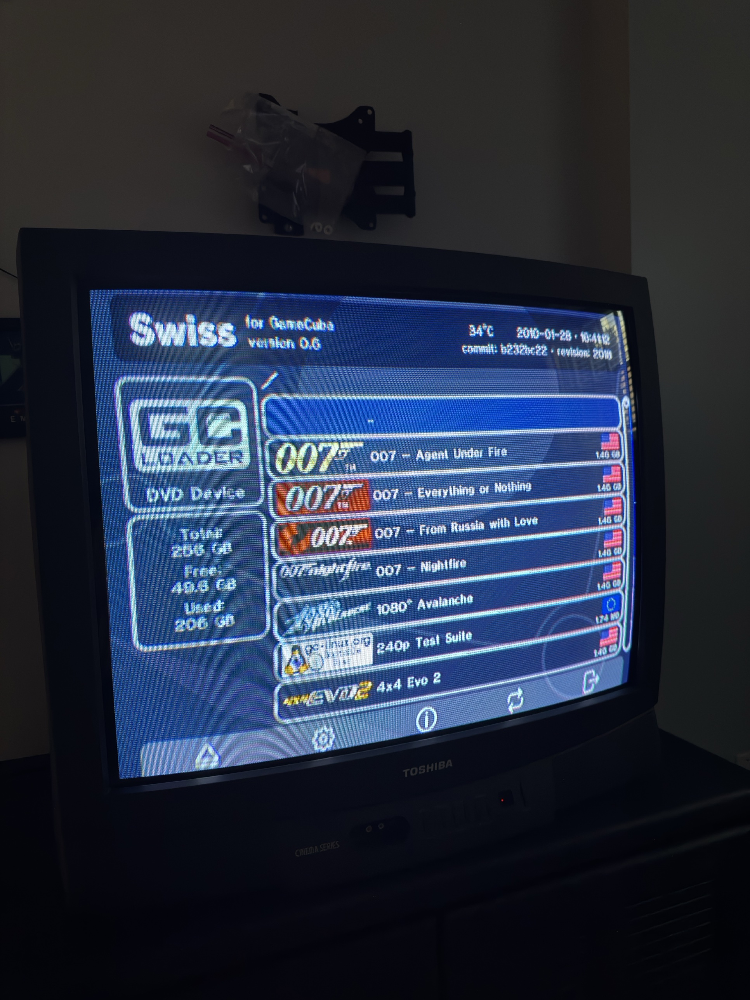
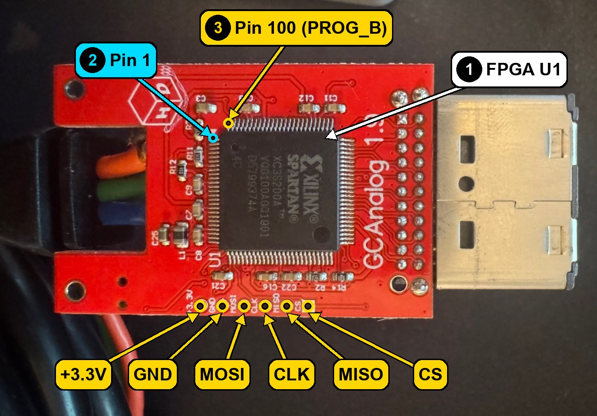
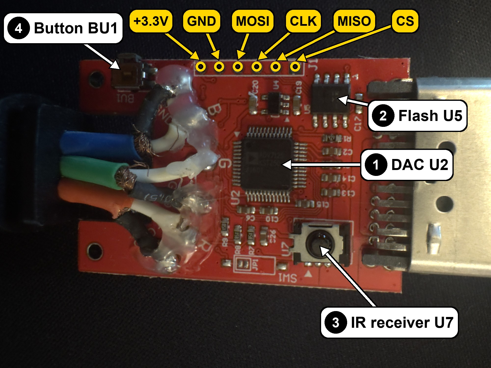
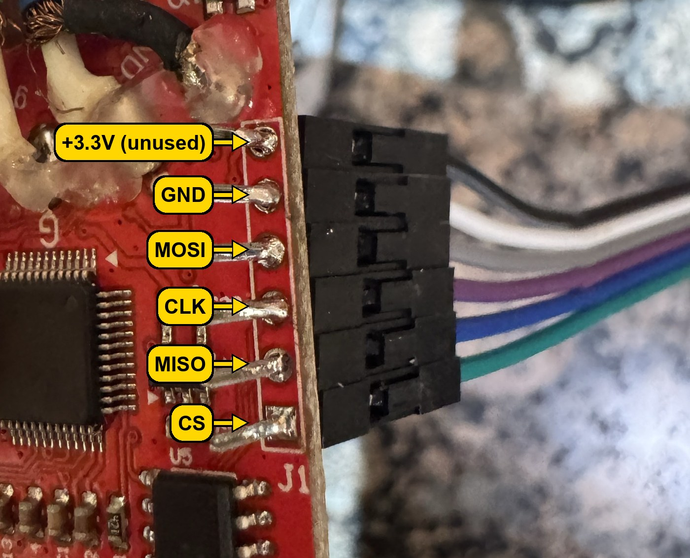
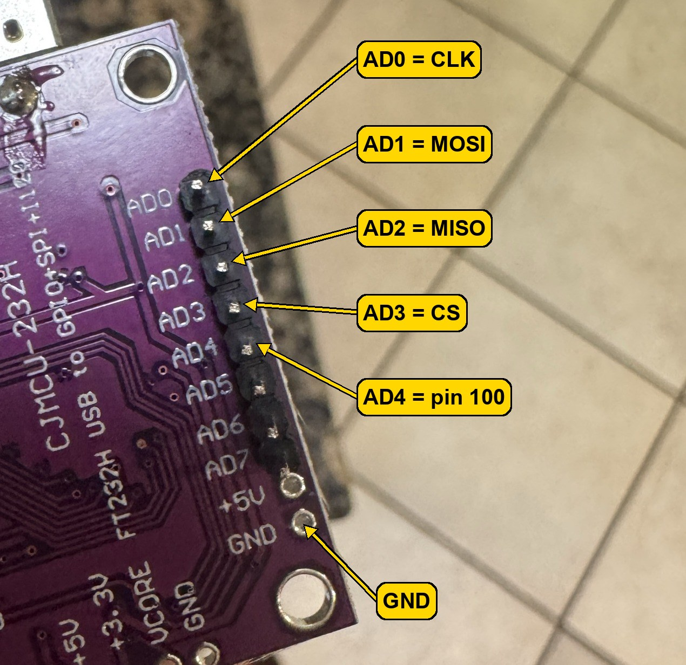
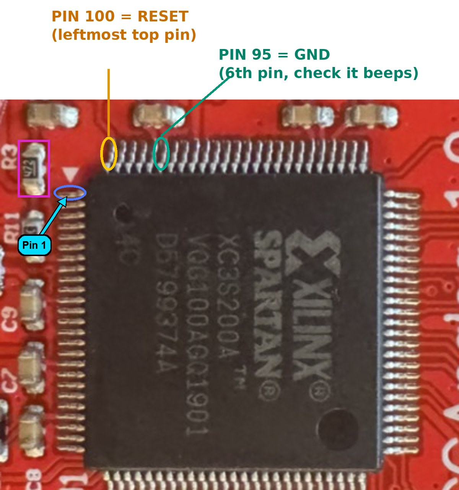
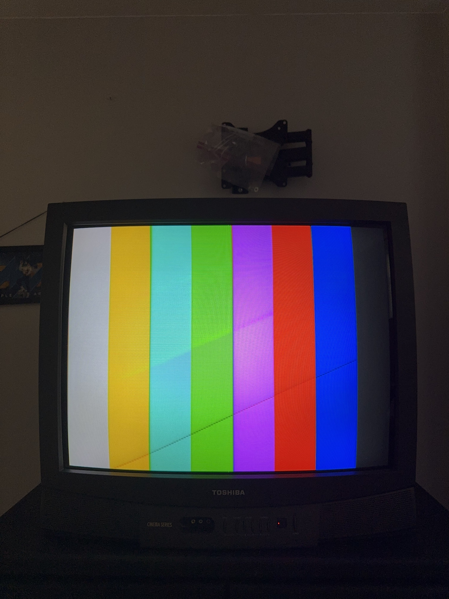
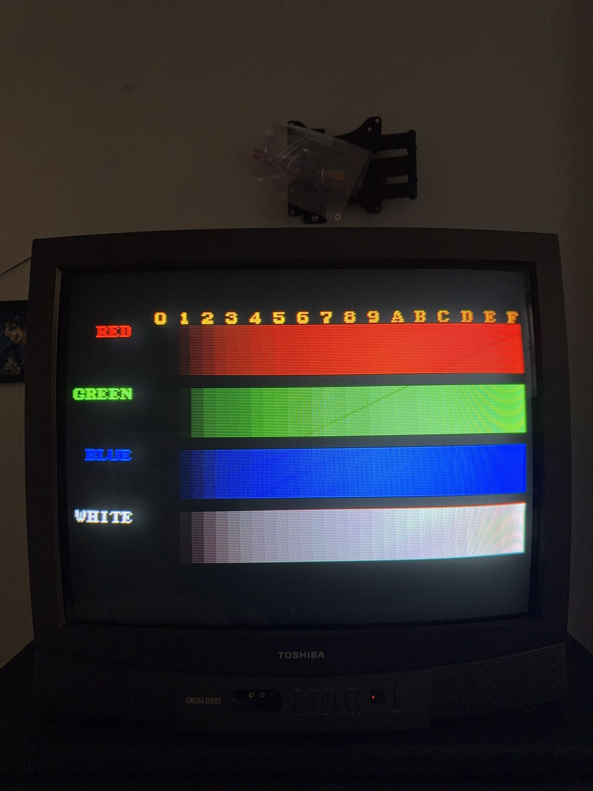

How to back up the firmware on an Insurrection Industries Carby Component cable and replace it with GCVideo 3.1, using an FT232H USB board.

October 6, 2026
Proceed at your own risk.
| Item | Note |
|---|---|
| CJMCU FT232H board (or any FT232H breakout) | The USB board that talks to the cable's flash chip. Pins AD0 to AD4 and GND are used. |
| Six female-to-female jumper wires | Five go between the FT232H and the cable's J1 header. The sixth (from AD4) is touched to FPGA pin 100 by hand. |
| A thin probe wire or needle | For touching FPGA pin 100. The pins are very close together, so a fine tip helps. |
| A computer running Linux, or Windows with WSL2 and usbipd-win | WSL2 runs Linux inside Windows. usbipd-win passes the FT232H from Windows to WSL2. |
| Python 3 with pyftdi | pyftdi is the Python library the flashing scripts use. Setup is on page 4. |
| The GameCube and the cable | The console powers the cable, so it stays on while you flash. |
| A TV with component input | To check the result. |
firmware/gcvideo/carby_gcvideo31_full.bin: the GCVideo 3.1 firmware.firmware/original/carby_backup.bin: the original firmware, for going back.src/flasher/: the scripts dump.py, flashfull.py and restore.py.Before you start: this means opening the cable's plug housing and touching a wire to one tiny pin on the FPGA chip while the console is on. Go slowly and keep the wire on that one pin. If something looks wrong at any step, stop and read the "If not" notes on that page.
The board sits inside the plug housing at the console end of the cable. Open the housing carefully so you can reach both sides of the board, and keep track of any parts you take off.


Create a Python virtual environment and install pyftdi. These commands put it in ~/ftdi:
python3 -m venv ~/ftdi ~/ftdi/bin/pip install pyftdi
Get this repository and go into it:
git clone https://github.com/jeff-strutb/carbygcvideo.git cd carbygcvideo
Install WSL2 (with Ubuntu) and usbipd-win, for example with winget install usbipd. Plug in the FT232H, then open PowerShell as administrator:
usbipd list usbipd bind --busid <BUSID> usbipd attach --wsl --busid <BUSID>
Use the BUSID shown next to 0403:6014 in the list. bind is needed only the first time. Run attach again each time you unplug the FT232H or restart.
lsusb
You should see a line with ID 0403:6014 (Future Technology Devices, FT232H).
If not: on WSL2, run sudo apt install usbutils if lsusb is missing, and repeat usbipd attach. Try another USB port or cable.
On many systems the scripts need permission to use the USB device. If a script stops with an access or permission error, run it with sudo in front, for example sudo ~/ftdi/bin/python src/flasher/dump.py my_carby_backup.bin.


Yes, that is my soldering. It is not pretty, but it worked, and if mine did, yours will too.
| Cable J1 pad | FT232H pin |
|---|---|
| GND | GND |
| CLK | AD0 |
| MOSI | AD1 |
| MISO | AD2 |
| CS | AD3 |
| FPGA pin 100 (PROG_B), held by hand during flash steps only | AD4 |
Do not connect +3.3V. The cable is powered by the GameCube, so the console stays on during every step. Feeding 3.3V from the FT232H as well is not needed.
~/ftdi/bin/python src/flasher/dump.py my_carby_backup.bin
Hold the AD4 wire tip on pin 100 and keep it there. Press Enter..., touch the AD4 wire to FPGA pin 100, hold it steady, and press Enter.You should see:
JEDEC ID: c22013 Flash size: 4 Mbit Saved my_carby_backup.bin sha256: d7e25e1a...
Compare your SHA-256 with the original in this repository:
cat firmware/original/SHA256SUMS
The full value is d7e25e1af843aa424e5c740e0e00690f0429120f4630d0e75bdc3935e503f607. A match means your cable is the same as the one documented here. Keep your own dump safe either way, for example copied to another drive.
If not:
Flash not responding correctly: check GND, CLK, MOSI, MISO and CS, check the console is on, and check the AD4 wire is on pin 100 (not its neighbor).The two reads differ or Read was all blank: nothing was saved. Hold the AD4 wire steadier and run it again.~/ftdi/bin/python src/flasher/flashfull.py firmware/gcvideo/carby_gcvideo31_full.bin
Complete image: version 3.1-crt, hardware ID CBCG, 346144 bytes. Then it asks: Hold the AD4 wire on pin 100 until DONE. Press Enter...Erasing... and Writing.... The script then checks every byte it wrote.DONE - verified OK.Settings reset to defaults the first time this image starts.

Why hold pin 100? Pin 100 is the FPGA's configuration reset (PROG_B). While it is held low, the FPGA stops running and lets go of the flash chip's wires, so the computer can write to the flash without the FPGA getting in the way.
If not:
VERIFY FAILED - rerun: do not power-cycle. Run the same command again.Flash not responding (ID ...) or Flash write-protected: nothing was written. Check the wiring and the pin 100 contact, then run it again.You should see the console's picture with correct colors. When the video mode changes (for example when a game starts), GCVideo shows a small resolution popup in the top right corner.


If not:
DONE - verified OK, and flash again. If it still fails, go back to the original (page 10).The Digital AV port does not carry the controller signal, so the GCVideo menu is opened with an IR remote. Remotes that use the NEC protocol work, which includes many TV and universal remotes.
IR Remote key config screen appears.Ok appears next to it.Dupe appears, that key is already used. Press a different one.You should see the screen close after the sixth key. Press your Enter key: the GCVideo menu opens.
In the menu, choose Store Settings to save. This also saves the remote keys. Without it, changes are lost at power-off.
If not: if the setup screen never appears, hold BU1 longer. If keys do nothing, the remote may not use the NEC protocol: try another remote.
Wire up as for flashing, console on, then:
~/ftdi/bin/python src/flasher/restore.py firmware/original/carby_backup.bin
Hold the AD4 wire on pin 100, press Enter, and keep holding until DONE - verified OK. You can let go. Then disconnect the FT232H and power-cycle. If it prints VERIFY FAILED, do not power-cycle; run it again.
restore.py only writes the original image from this repository (it checks the SHA-256). If your own dump from step 1 differs from it, keep your dump safe and open an issue on the repository before restoring.
| Symptom | Fix |
|---|---|
| No change after flashing | Check that the last line was DONE - verified OK. If it was not, rewire CLK and MOSI and flash again. |
| Flashing seems to work but nothing changes | The flash chip ships write-protected, and it ignores writes silently. flashfull.py clears the protection first. Make sure that is the script you are using. |
| Screen flashes and resets during commands | The AD4 wire is still touching pin 100. Remove it when not flashing. |
| Diagonal or rolling garbage on a CRT | The game is outputting 480p, which a standard-definition CRT cannot show. Use 240p or 480i. |
| Strong flicker in Game Boy Player | That is 480i interlacing. Launch Game Boy Player in 240p from Swiss. |